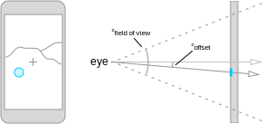
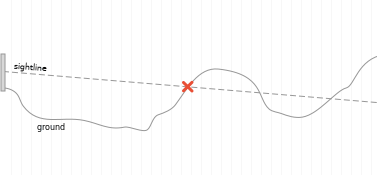
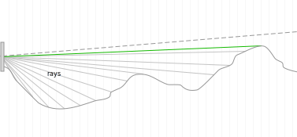

While hiking, I've had the idea several times for a sort of reverse waypoint finder, an app I can use to find the actual location of a landmark using the camera. I've seen examples of the opposite, where the latitude and longitude of a point are specified and a lived marker is displayed over the camera.
A few weekends ago I decided to use this as an opportunity to dive into iOS development. I wrote the initial version using swift and the Google elevation api.
This is how it works.
Overview
The initial data I need:
- My current location: latitude, longitude, and elevation
- The direction towards the landmark: heading (compass direction), and pitch (up/down direction)
The final data I need:
- The latitude, longitude, and elevation of the landmark
At the high level, the app does the following:
- Compute a three dimensional vector representing the direction from the phone to the point of interest.
- Walk out along that vector in steps, guessing the elevation at each point.
- Check whether the step intersects with the ground. When it has I'm done.
Getting the data
The iOS sdks contain several apis that provide the exact data I need. CoreLocation provides the latitude, longitude, elevation, and heading of the phone. CoreMotion gives me the pitch of the phone with respect to a dynamically corrected frame of reference. The z-axis is equivalent to gravity and the x-axis runs left and right across the phone's screen.
Adjustments
The simple approach here is center the camera on the target, and use those readings. However, I wanted to be slightly more intelligent by allowing the user to tap on the exact location they're interested in. I need to calculate some angular offsets from the "default" direction and adjust.
These offsets can be calculated using trigonometry, given the field of view and position of the tap. iOS provides the camera's field of view for the main axis which is adjusted based on the current zoom. The fov for the other axis can be computed from the device's aspect ratio. One axis' offset is applied to the pitch, as shown in the diagram, and the other adjusts the heading.

Looking
From the starting position, I need to walk out in the direction I've found.
In increments of 10 meters we compute a new location and calculate the actual elevation and elevation along the line of sight. Once the difference is negative the target location has been found.

In each step a custom function calculates a new location from a starting
location, direction, and distance. A simple linear function, starting
altitude + distance * pitch angle, calculates the sightline
elevation. A call to the Google elevation api estimates the actual
elevation of the ground. To maximize network efficiency, the walk out is
chunked, with 512 estimates per api request.
Fallback
However, the camera might be pointing above the horizon, or the target is so far that time becomes an issue. This leads to no intersections, so some maximum distance must be set as a stopping point.
To return some useful information, the highest peak in view is found during a second pass. At each step's location the angle from the phone to the ground is calculated. The highest angle is guaranteed to be the highest point, as shown in the following diagram.

Through the process, I had several ideas that didn't work. One was to use the maximum elevation encountered in the first pass. This doesn't work when the phone is angled down. Think about rotating the diagram so the first peak is above the second.
Wrap Up
This was a great exploration of the powerful data that's accessible through smartphones. It was also a fun and useful way to really dive into iOS development.
I've had the chance to try this out around my neighborhood and during a few runs in a nearby state park and it works fairly well. With the current state of location and accelerometer accuracy, the margin of error is too high for greatly accurate navigation, but it's a great proof of concept and does a good job of giving an idea of where a landmark might be.